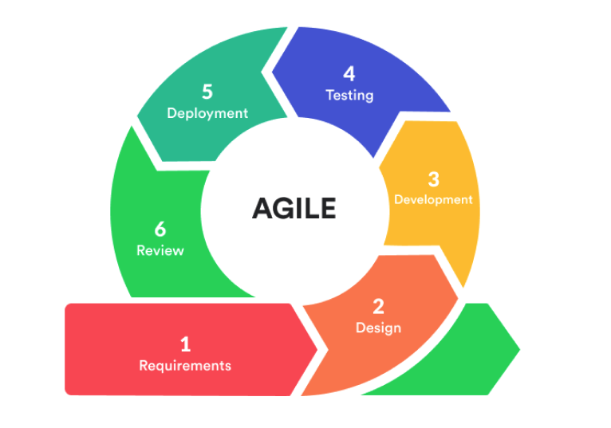

Agile
Agile on lähenemine projektijuhtimisele, mis keskendub üha edasijõudnutele
ja iteratiivsetele sammudele projektide lõpuleviimisel. Projekti lisaosad
viiakse läbi lühiajalistes arendustsüklites. Lähenemisviisis on prioriteediks
kiire teostus, muutustega kohanemine ja koostöö, mitte
ülevalt-alla juhtimine ja seatud kava järgimine.
- Planeerimine.
Praegu määra kindlaks projekti põhiidee, aruta kliendi vajadusi
ja moodustage ülesannete loetelu. Teisel viisil nimetatakse seda
nimekirja tagavaraks. Siis on ülesanded eelnevalt ära pandud -
kõige tähtsamad ja pakilisemad on paigutatud tagavara
ülemisse osasse.
- Analüüs.
Tagatipust valib käsk ühe iteratsiooni ülesanded. Siis määrab,
milliseid vahendeid nende ülesannete täitmiseks vaja läheb,
ja jaotab need omavahel. Samas vormistatakse iga ülesande
eduka valmimise kriteeriumid: milliste parameetrite järgi
on selge, et ülesanne on hästi tehtud. Tänu sellele
lähenemisele on kogu meeskonnal samad ootused, mis
iteratsiooni tulemuste suhtes.
- Laienemine.
Meeskonnaliikmed töötavad oma ülesannete kallal.
Iga päev kohtuvad nad, nad, et arutada praeguseid
edusamme: mida nad praegu teevad, millised probleemid
neil on, mida nad kavatsevad edasi teha. See
on oluline, et töö projektiga oleks läbipaistev
ja kõigil meeskonnaliikmetel oleks olukord.
- Testimine.
Selles etapis kontrollitakse projekti sobivust -
näiteks seda, kas programm käivitub, kas ta täidab
oma funktsioone õigesti jne. Katseetapp toimub
paralleelselt teostusetapiga. See on vajalik avastatud
probleemidele kiireks reageerimiseks ja ajas
muudatuste tegemiseks.
- Release.
Sprinti lõpus näitab meeskond oma töö tulemusi
kliendile - näiteks valmisprogrammi või osa selle
funktsioonidest. Klient annab tagasisidet - selgitab,
mis talle sobib ja mis mitte. Kommentaaride korral
arutab meeskond, kuidas projekti lõpetada ja naaseb
eelmistesse etappidesse.

Allikad:
Practicum,
Coursera